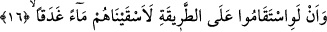
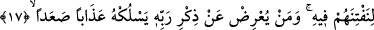
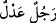

cehennem ateşi tutuşturulacağı gibi o cinlerle de tutuşturulur.
Rivâyet olunur ki Haccâc, Saîd b. Cübeyr’i katletmek istediği zaman kendisine:
“Benim hakkımda ne dersin?” diye sorar. Said: “Sen kâsıtsın” der. Orada bulunanlar
Said’in Haccac’ı adâletle vasfettiğini zannederek, “Adam ne güzel söyledi” derler.
Bunun üzerine Haccac onlara dönerek: “Ey câhiller! Adam beni kâfir, câhil yaptı” der
ve yukardaki âyet ile “sonra kâfir olanlar (hâlâ putları) Rableri ile denk
tutuyorlar.” (el-En’am, 6/1) âyetlerini okur.
Bâzıları yukarda Said’in sözü diye naklettiğimiz sözü bir kadının söylediğini ifâde
ederler. Nitekim es-Sıhah’ta böyle yazılıdır. Bu sözün önce Said sonra kadın tarafından
söylenmiş olma veya birbirine benzeme ihtimâli mevcuddur.
16. Şâyet doğru yolda gitselerdi, onlara bol su verirdik.
“Şüphesiz onlar doğru yolda” İslâm ümmetinin gittiği yolda “gitselerdi”. Bu
cümlenin başında yer alan “en”, “enne”nin şeddesiz olanıdır. Bu cümle yukarda geçen
“istemea/dinledi” fiiline mâtuftur. Buna göre âyet-i kerîmeye mânâ vermemiz gerekirse;
Allah vahyetti ki, cinler veya insanlar ya da her iki zümre birden İslam milletinin tâbi
olduğu doğru yol üzere gitselerdi “onlara bol su verirdik.”
17. Bu hususta kendilerini denememiz için. Kim Rabbinin zikrinden yüz çevirirse,
(Rabbin) onu gitgide artan çetin bir azâba uğratır.
“Bu hususta”, kendilerine su vermemiz ve genişlik sağlamamız hususunda Allah’a
nasıl şükredecekler diye “kendilerini denememiz için” onlara bol su verirdik. Su
vermek anlamına gelen fiilin kökü olan “el-İskà” ile “Saky” aynı anlamadır.
Râğıb İsfahânî’nin ifâdesine göre, saky ve sukya herhangi bir kimseye içmek üzere su
vermek demektir. İska ise herhangi bir kimseye, dilediği şekilde alması için suyu
hazırlamak demektir. Nitekim Arapça’da: “eskaytuhu nehran” denir ki anlamı onu nehre
götürdüm, demektir. İska kelimesi belagat ve anlam ifâde etme bakımından daha ileridir.
“Gadekan” kelimesi bol demektir. Suyun bu kalıptaki bir kelimeyle sıfatlanması,
bolluğunun mubâlağalı bir biçimde vurgulanması içindir. Bu tıpkı âdil olduğu
mubâlağalı olarak vurgulanmak istenen kişi için “
/tam mânâsıyla âdil adam”
ifâdesinde olduğu gibidir.
Sayılamayacak kadar nimet varken bilhassa suyun zikredilmesi, onun zenginliğin aslı